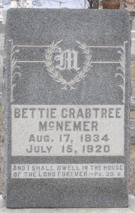
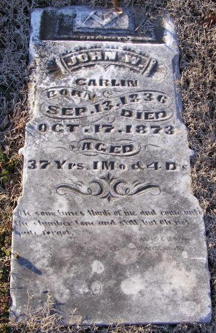
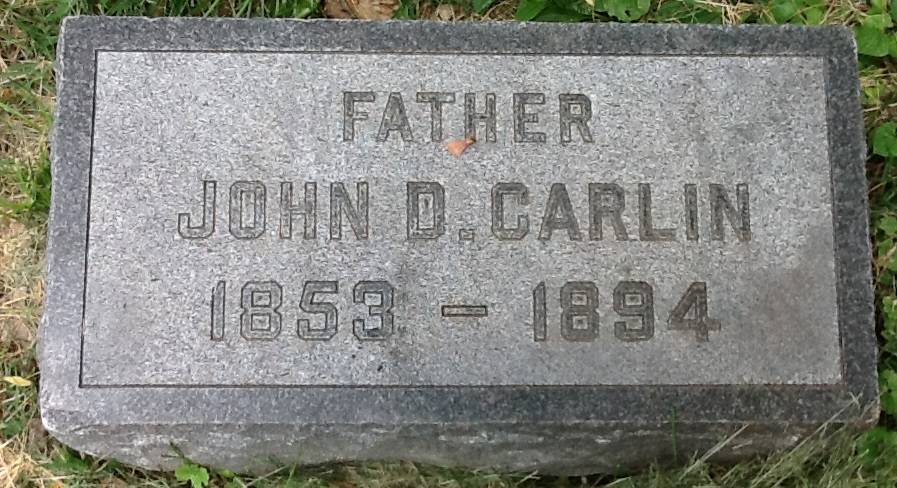
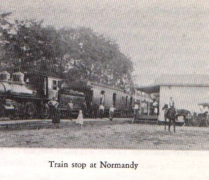
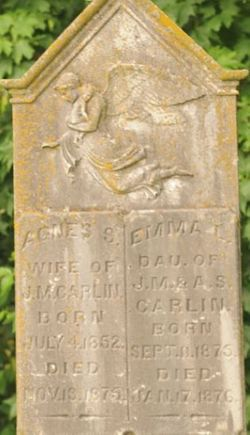
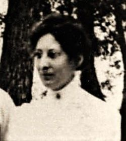
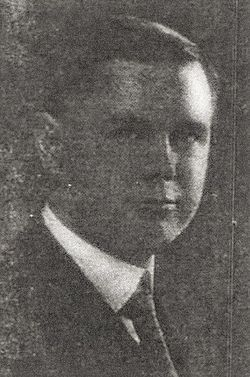

{kind=link}
{kind=link}
{kind=link}
{kind=link}
{kind=link}
{kind=link}
{kind=link}


|  |
30. Eleanour Elizabeth "Bettie" CARLIN [scrapbook] (Joseph
, Matthias
, Peter
) was born on 17 Aug 1834 in Daviess County KY. She died 1 on 15 Jul 1920 in Sorgho KY. She was buried 1 on 16 Jul 1920 in Elmwood Cemetery. |
Bettie married 1 Philip MCNEMER on 20 Jul 1876. Philip was born on 24 Apr 1830. He died on 7 Apr 1891. He was buried in Sorgho KY. |
Bettie also married Green Peay CRABTREE on 7 Nov 1850 in Daviess County Kentucky. Green was born in 1832 in Owensboro. He died on 3 Nov 1865 in Owensboro KY, DAVIESS COUNTY. |
They had the following children.
52 M i
Joseph P CRABTREE was born on 17 May 1853 in Kentucky. He died 1 on 10 Oct 1938 in Henderson Road, Daviess County CO..
Joseph married Anna GRAHAM. 53 F ii
Ruth CRABTREE was born on 17 Sep 1854 in Henderson Road, Daviess County KY. She died in 1903. + 54 F iii Mary F CRABTREE was born on 16 Sep 1856. She died in 1895. + 55 F iv Ella "Ella" CRABTREE was born on 18 Dec 1858. She died on 2 Mar 1949. + 56 F v Sallie "Sarah" CRABTREE was born on 10 May 1863. She died on 18 Jan 1937. 57 M vi
Green CRABTREE was born on 16 Sep 1865 in Sorgho WEST LOUISVILLE, Kentucky. He died on 20 May 1944 in Cairo, Illinois. He was buried in Villa Ridge Pulaski, Illinois.
|  |
31. John William CARLIN [scrapbook] (Joseph
, Matthias
, Peter
) was born on 13 Sep 1836 in Spencer County, Kentucky. He died on 17 Oct 1873 in DENVER COLORADO. He was buried in Elmwood Cemetery, CARLIN FAMILY CEMETARY OLD HENDERSON ROAD.
|
John married 1 Susan Catherine HIATT, daughter of Jerome G HIATT and Amanda MILLER, on 25 Oct 1859 in HOME OF JOSEPH CARLIN DAVIES CO KY. Susan was born in 1839 in LINCOLN CO KY. She died on 20 Feb 1882 in Boyle County, Kentucky. She was buried in Rosehill Cemetery OWENSBORO KY.
|
John and Susan had the following children.
+ 58 F i Amanda CARLIN was born in 1861. She died in 1892. + 59 F ii Sarah Forest "Sallie" CARLIN was born on 21 May 1862. She died on 16 Oct 1953. + 60 F iii Lillian Catherine CARLIN was born on 10 Apr 1867. She died on 22 Mar 1963.
41. Edmond CARLIN (William Van Dyke , Matthias , Peter ) was born on 23 Dec 1841. He died on 2 Aug 1888. He was buried in Kings Church Cemetery Mt Washington KY. |
Edmond married Sarah Ann JONES "Sallie" in 1864. Sallie was born in 1848. She died in 1917. |
They had the following children.
61 M i
George CARLIN was born in 1866. 62 M ii
John CARLIN was born in 1867. 63 M iii
Mary CARLIN was born in 1868. 64 F iv
Sallie CARLIN was born in 1870.
|  |
44. John D CARLIN [scrapbook] (William Van Dyke , Matthias , Peter ) was born in 1853. He died 1 on 4 Oct 1894 in Indianapolis, Indiana. He was buried in Crown Hill Cemetery. |
He had the following children.
|  |
50. John M CARLIN [scrapbook] (David F , Matthias , Peter ) was born in Jun 1848 in Elk Creek Spencer County KY. He died on 30 Dec 1887 in Rivals Spencer County KY. He was buried in Slone-Carlin Cemetery Normandy KY.
|
John married Agnes GUTHRIE in 1873. Agnes was born in 1852. She died in 1875. |
They had the following children.
66 F i

Emma CARLIN [scrapbook] was born in 1874. She died in 1875. She was buried in Grove Hill Cemetery, Shelbyville, Ky.
|  |
John also married Laura Virginia MICKEY [scrapbook] in 1884. Laura was born on 13 Feb 1853 in La Grange KY. She died on 1 Oct 1923 in Detroit MI. She was buried in Cave Hill Cemetery Jeffersdon Co KY. |
They had the following children.
+ 67 M ii Fayette H CARLIN was born on 10 Feb 1885. He died on 14 Jan 1922. 68 M iii

Roy Bolling CARLIN [scrapbook] was born in 1886. He died in 1955.